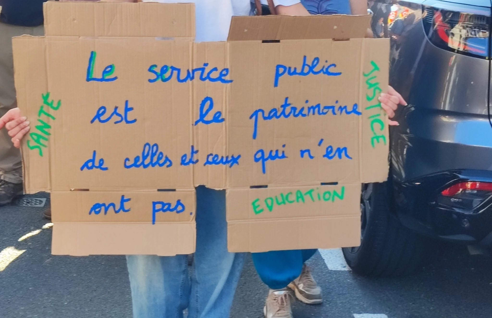
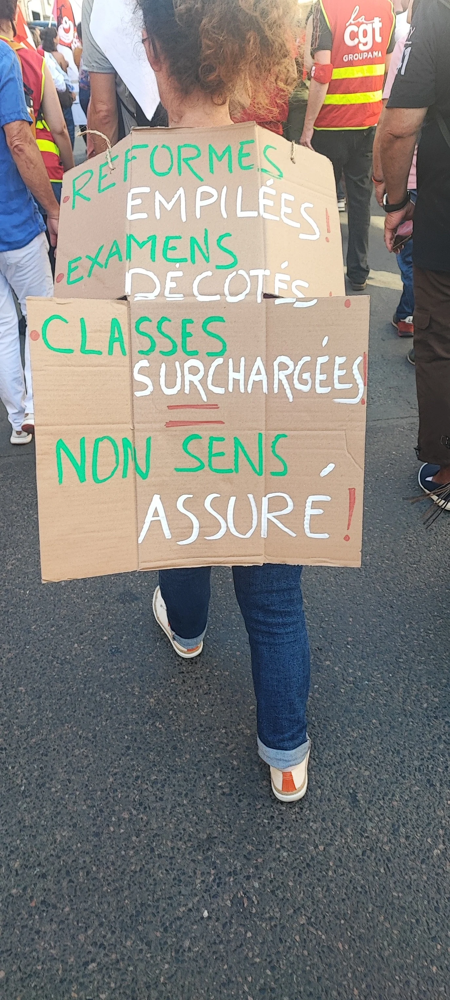

Compte rendu fédéral
À Niort le 18 septembre, les salaires, les retraites et les services publics dans la rue
Date indiquée par Facebook · 19 septembre 2025
Repères éditoriaux
Le 18 septembre 2025 à Niort, le cortège a porté quatre exigences que nous reprenons dans notre compte rendu. Arrêter les régressions sociales, augmenter les salaires, développer les services publics et abroger la réforme des retraites. Les onze photos montrent les revendications portées dans la rue.
Texte conservé avec la publication
Un message clair a retenti dans tout le pays le 18 septembre :
- Stop aux régressions sociales.
- Augmentez les salaires.
- Développez les services publics.
- Abrogez la réforme des retraites.
Plus d’un million de personnes dans les rues, plus de 3000 à Niort, avec un même élan pour dire « non aux injustices ».
Macron, son 1er ministre et le patronat doivent entendre cette colère. Les Français•es exigent une autre politique : une politique sociale, juste et ambitieuse.
Il est temps de changer de cap avec :
- Un budget qui répond aux besoins sociaux.
- Une démocratie renforcée, avec plus de pouvoirs pour les salarié•es.
- La fin des passages en force comme le 49-3.
Ensemble, avec les syndicats, les associations et les forces de gauche, construisons une alternative de progrès et de paix pour la France.
Photos lors de la manifestation à NIORT


Sources
Archive rouge · export Facebook · AR-0002-FB-01010
À lire aussi · Le 18 septembre, notre appel à rejoindre la mobilisation intersyndicale